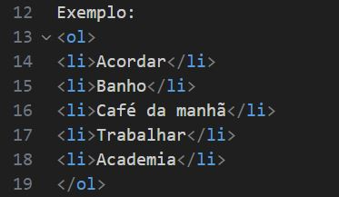
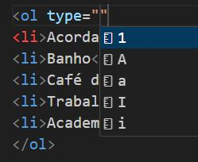

Ao usar a tag <ol> será gerado uma lista ordenada, o default da lista é ordenação numérica
Exemplo:Veja como fica a lista na IDE.
Podemos acrescentar o comando type na tag ol(ordered list) para decidirmos como queremos a lista, teremos opção de lista numérica, letra maiúscula e minúscula, numerais romanos maiúsculos e minúsculos.
Exemplo de lista com caracteres maiúsculos.
Exemplo: